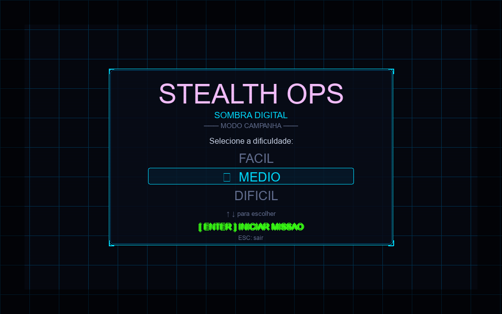
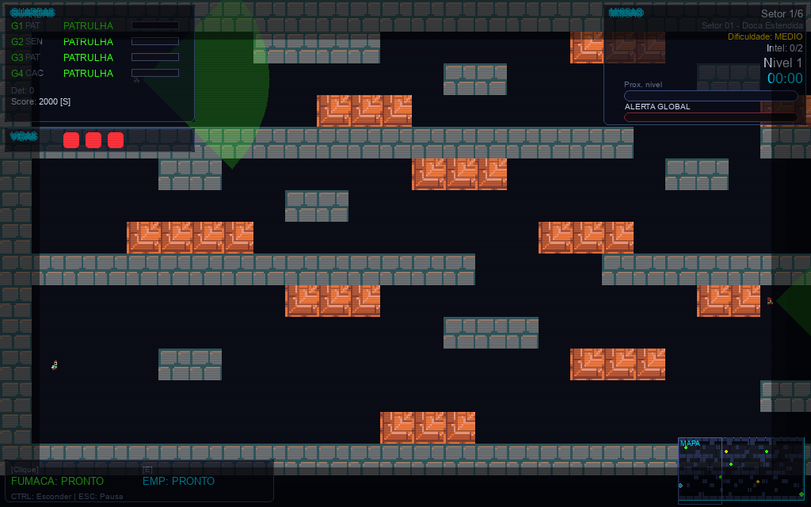
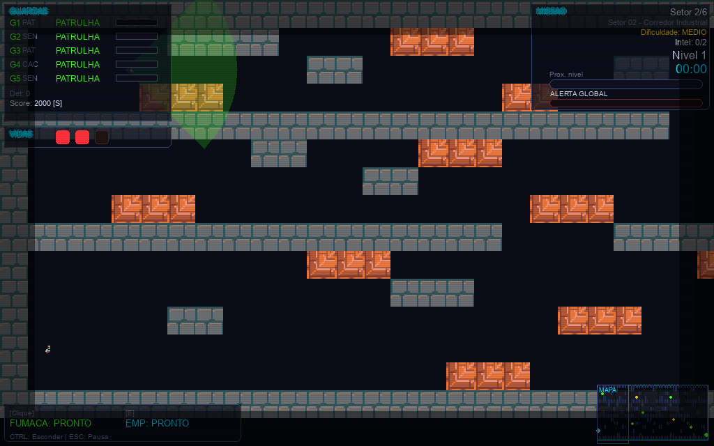
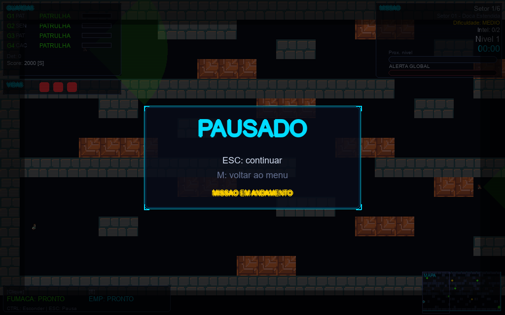
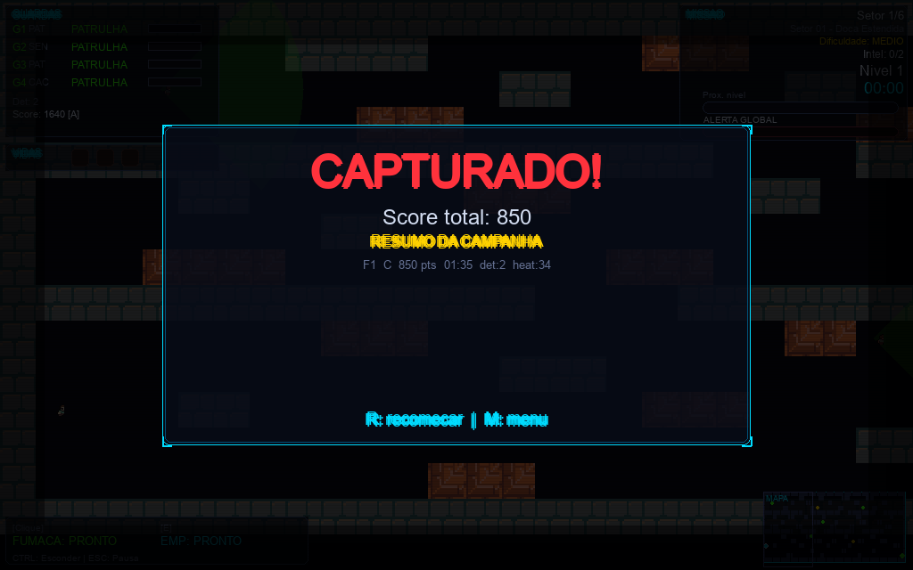
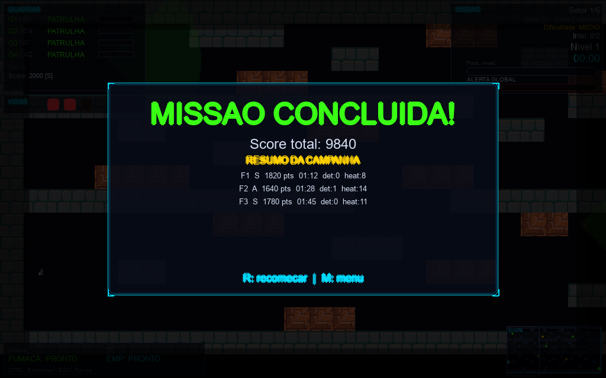

✔ Renderizado — partículas, grid neon, painel cyberpunk, seleção de dificuldade

✔ Renderizado — HUD completo, cones de visão, minimapa, barras de detecção

✔ Renderizado — mapa maior, mais guardas, guardas animados

✔ Renderizado — overlay translúcido, painel cyberpunk, cantos decorativos

⚠ Renderizado — score, rank, resumo de fase, opções de reinício

✔ Renderizado — score total, resumo por fase com ranks, título em neon